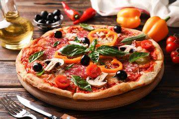
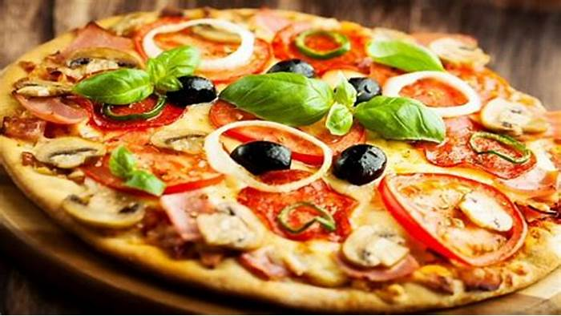
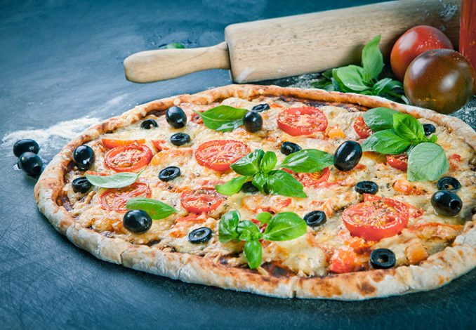
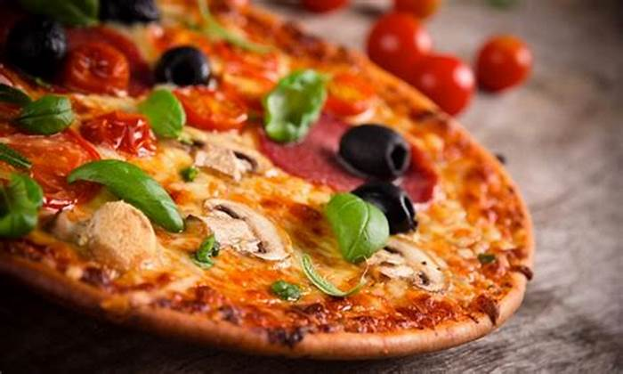
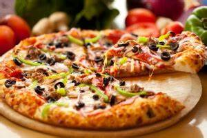
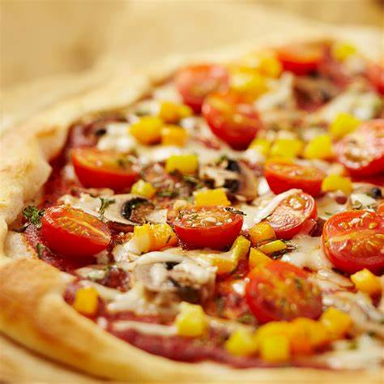
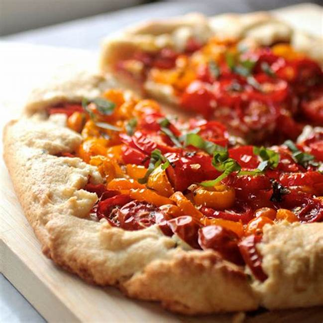

Our Menu
|

Cheese Pizza We’re bringing the heat with more of the bold buffalo flavor you love. Our original crust is covered in a new buffalo sauce with a hint of buttery richness and a tangy, craveable kick. Piled high with grilled chicken, hickory-smoked bacon, fresh-cut onions, and real cheese made from mozzarella. 120 L.E |

Sausage Pizza Whether you’re a native Philadelphian or still waiting to visit the City of Brotherly Love, “youse” can enjoy an elevated form of the classic Philly cheesesteak in this original tribute to the king of hot sandwiches, the Papa John’s Philly Cheesesteak pizza. 65 L.E |

Original Crus
A masterpiece of hearty, high-quality meats including pepperoni, savory sausage, real beef, hickory-smoked bacon, and julienne-cut Canadian bacon, all topped with real cheese made from mozzarella. 100 L.E |

The Meats Pizza A masterpiece of hearty, high-quality meats including pepperoni, savory sausage, real beef, hickory-smoked bacon, and julienne-cut Canadian bacon, all topped with real cheese made from mozzarella. 200 L.E |
|

Super Hawaiian Pizza A masterpiece of hearty, high-quality meats including pepperoni, savory sausage, real beef, hickory-smoked bacon, and julienne-cut Canadian bacon, all topped with real cheese made from mozzarella. 70 L.E |

Meatball Pepperoni Pizza A masterpiece of hearty, high-quality meats including pepperoni, savory sausage, real beef, hickory-smoked bacon, and julienne-cut Canadian bacon, all topped with real cheese made from mozzarella. 90 L.E |

Philly Cheesesteak Pizza A masterpiece of hearty, high-quality meats including pepperoni, savory sausage, real beef, hickory-smoked bacon, and julienne-cut Canadian bacon, all topped with real cheese made from mozzarella. 130 L.E |

Pepperoni, Sausage & Six Cheese Pizza A masterpiece of hearty, high-quality meats including pepperoni, savory sausage, real beef, hickory-smoked bacon, and julienne-cut Canadian bacon, all topped with real cheese made from mozzarella. 150 L.E |